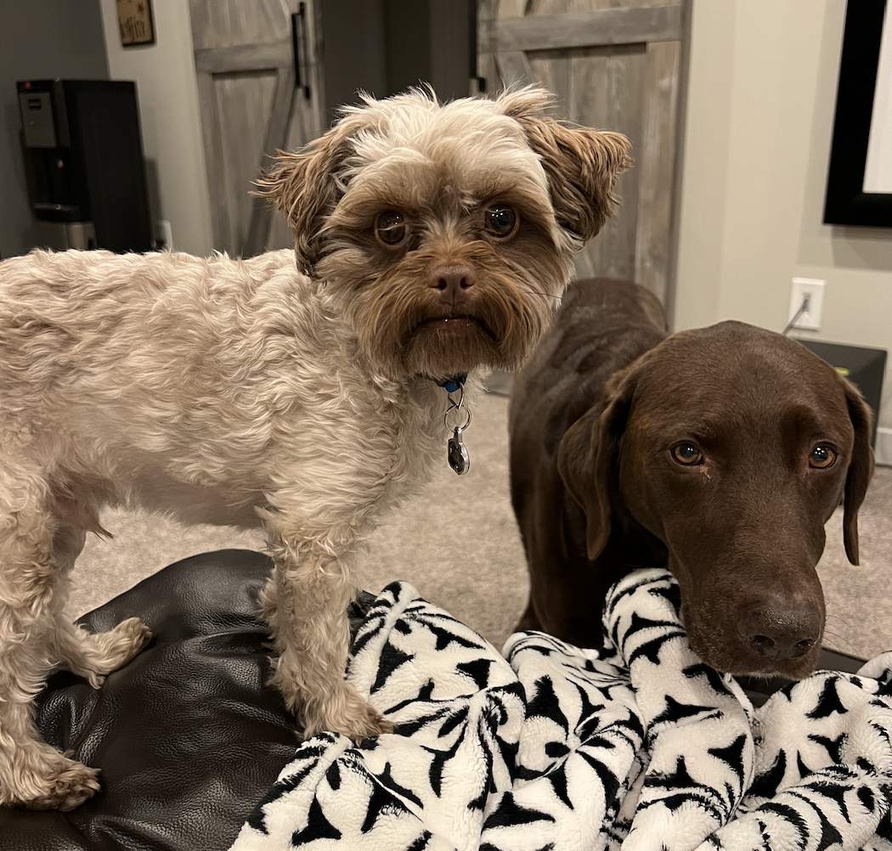

Contents
The World
Sarah travels around the world.
The Animals in my Life
Sarah's deeply routed love of animals.
Sarah Bettinger's Hierarchy of Movies
A ranking of Sarah's 39 favorite films.
Deep Thoughts by Sarah Bettinger
The inner workings of Sarah's mind.
Sarah Bettinger's Hierarchy of Juice
The truth about apple juice.
Sarah's Soundtrack
The music that defines Sarah Bettinger.
The World
I've seen some things.

Me and the fam visiting Muir Woods. I started playing "Parade of the Ewoks" ever so quietly on my phone and it took a while for anybody to notice...

Me and the fam in front of the Hermitage Museum in Saint Petersburg, Russia.
I met this lovely bear sitting on a park bench in Veliky Novgorod, Russia.

You don't have to go that far to find something relatively cool. Jk, the Legion of Honor in San Francisco is actually a really cool museum.
Yes, I am serious when I say I just want to run away to Paris. 300% recommend France.
The Animals in my Life
Tivoli
Tivoli was the first pet we ever had (aside from our two pet frogs, Sam and Nellie, who perished in an unfortunate accident.) Although Tivoli looks furious in every picture, we loved that cat and he loved us. We went through a lot together.
Tivoli passed away tragically at the age of 6 due to a heart condition we never knew he had. That explains how fat he was I guess. I miss that cat a lot.
Millie
We got Millie when I was in 8th grade and I love her to death! From the very beginning, she was my girl. She has a lot of personality, especially around her two younger (cat) brothers, but she is also terrified of nearly everything.
Oslo
Oslo is a sweet boy. I caught him mid-yawn in this pic. We think he may have some cat depression because sometimes he just stays in bed literally all day while the other cats are hanging out.
Nevsky

Nevsky was once described as "a little orange man". This description is somehow quite apt. He fears nothing but balloons and anything that looks remotely like a balloon.
Tipen
I met Tipen (or Appleton) in Norway. He followed us everywhere - even halfway across the city (granted, Stavanger isn't very big). What a good friend.
Charlie & Fitz
My uncle has two dogs, Charlie (the chocolate lab on the right) and Fitz (the snickerdoodle on the left). They are super sweet boys and are exceptionally well trained.
Sarah Bettinger's Hierarchy of Movies

Yes, you read that right. I included Shrek 2 but not Shrek. I stand by this decision.
In understanding this hierarchy, it is important to recognize that my criteria was not solely based on cinematic quality. For instance, "The Secret Life of Walter Mitty" is an absolute cinematic masterpiece; however, it is not necessarily one of my go-to movies.
Learn more about John Cusack here!Deep Thoughts by Sarah Bettinger
- My spirit animal is the ringtailed lemur.
- Michael Jackson faked his death.
- How do airplanes fly?
- Johnny Depp did NOT age well.
- I hate coding and the robots are coming to take over the world.
- Bikers need to choose to be treated like either pedestrians or vehicles. They can't be both.
- I enjoy word-based logic puzzles. Get over it.
Sarah Bettinger's Hierarchy of Juice
**Yes, I can in fact taste the difference.
Sarah's Soundtrack
I like music.
Check out the beginning of my favorite episode of Phineas and Ferb!